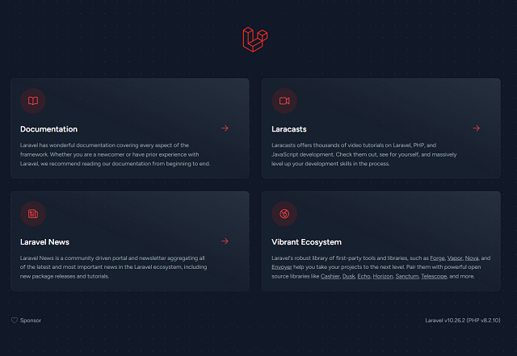

開発環境構築の手順
sudo service docker start
cd /mnt/c/Users/user/git/react_demo2
curl -s "https://laravel.build/dev" | bash時間がかかります。「dev」になっている箇所は任意です。
cd dev
./vendor/bin/sail up -dこれはdocker-compose.ymlを実行することを意味しています。複数のdockerコンテナが立ち上がります。
http://localhost
SESSION_DRIVER=database※.envファイルの場所はLaravelをインストールしたディレクトリである、プロジェクトのディレクトリの直下に存在する。
./vendor/bin/sail artisan migrateマイグレーションを実行するとデータベースにテーブル群が作成されれる。ちなみにテーブル名はプロジェクト名と同じである。今回の例でいえば「dev」になる。
./vendor/bin/sail npm updateこれをしておかないと、バージョン違いによるエラーが多発します。
./vendor/bin/sail composer require laravel/ui
./vendor/bin/sail artisan ui bootstrap --authログイン機能や、bootstrapなどが作成されます。 bootstrapを指定することによりbootstrapによるデザインになるようです。
./vendor/bin/sail npm install -D react react-dom @types/react @types/react-dom
./vendor/bin/sail npm install -D @vitejs/plugin-react
./vendor/bin/sail npm install -D typescript
./vendor/bin/sail npx tsc --init --jsx react-jsxtsconfig.json という設定ファイルが生成されます。 この設定ファイルを使用して、TypeScriptのコンパイルオプションや挙動をカスタマイズできます。
./vendor/bin/sail npm run build
import { defineConfig } from 'vite';
import laravel from 'laravel-vite-plugin';
import react from '@vitejs/plugin-react';
export default defineConfig({
plugins: [
laravel({
input: ['resources/sass/app.scss', 'resources/ts/index.tsx'],
refresh: true,
}),
react(),
],
server: {
hmr: {
host: 'localhost',
},
},
});
import React from 'react';
import ReactDOM from 'react-dom';
const App = () => {
return (
<div>Hello World! 今日の天気はいかがですか？</div>
);
}
ReactDOM.render(<App />, document.getElementById('react_app'));
./vendor/bin/sail npm run buildtsxファイルを修正した場合、その都度、上記コマンドでビルドします。
<!DOCTYPE html>
<html lang="{{ str_replace('_', '-', app()->getLocale()) }}">
<head>
<meta charset="utf-8">
<meta name="viewport" content="width=device-width, initial-scale=1">
<title>Laravel</title>
@viteReactRefresh
@vite(['resources/sass/app.scss', 'resources/ts/index.tsx'])
～略～
<body class="antialiased">
<div id="react_app"></div><!-- Reactの埋め込み部分 -->
./vendor/bin/sail stop再スタートするときは以下の通りです。
./vendor/bin/sail up -dDockerサービスまで止める場合は以下の通りです。
sudo service docker stop
./vendor/bin/sail mysql
./vendor/bin/sail npm npmのコマンド ./vendor/bin/sail composer composerのコマンド ./vendor/bin/sail php PHPのコマンドDockerの停止、開始も「./vendor/bin/sail」コマンドで行います。
./vendor/bin/sail pauseコンテナの再開（一時停止解除）:
./vendor/bin/sail unpauseコンテナを停止:
./vendor/bin/sail stop
./vendor/bin/sail up -dDockerサービスを停止します。(Dockerそのものを停止させます。)
sudo service docker stopDockerサービスを起動します。
sudo service docker startVmmemプロセスを停止する。 コマンドプロプトで以下を実行
wsl --shutdown全ての Docker コンテナを停止し、ネットワークを削除します。
./vendor/bin/sail down
./vendor/bin/sail mysql
sail down --rmi all -v
docker-compose.yml
mysql:
image: 'mysql/mysql-server:8.0'
ports:
- '${FORWARD_DB_PORT:-3306}:3306'
environment:
MYSQL_ROOT_PASSWORD: '${DB_PASSWORD}'
MYSQL_ROOT_HOST: '%'
MYSQL_DATABASE: '${DB_DATABASE}'
MYSQL_USER: '${DB_USERNAME}'
MYSQL_PASSWORD: '${DB_PASSWORD}'
MYSQL_ALLOW_EMPTY_PASSWORD: 1
volumes:
- 'sail-mysql:/var/lib/mysql'
- './vendor/laravel/sail/database/mysql/create-testing-database.sh:/docker-entrypoint-initdb.d/10-create-testing-database.sh'
networks:
- sail
healthcheck:
test:
- CMD
- mysqladmin
- ping
- '-p${DB_PASSWORD}'
retries: 3
timeout: 5s
phpmyadmin:
image: phpmyadmin/phpmyadmin:latest
ports:
- 8080:80
depends_on:
- mysql
environment:
PMA_HOST: mysql
networks:
- sail
マイグレーションの基本概念
マイグレーションは、データベースのテーブル作成や変更をプログラムの形で記述することを可能にし、これらの変更をバージョン管理システムに保存できるようにします。これにより、チームメンバー間での変更内容の共有が容易になるだけでなく、開発と本番環境のデータベース構造を同期しやすくなります。順次実行の重要性
Laravelのマイグレーションは「順次実行」される必要があります。これは、マイグレーションファイルの命名規則によって保証されています。マイグレーションファイル名の先頭にはタイムスタンプが付されており、Laravelはこのタイムスタンプをもとにマイグレーションを適切な順序で実行します。マイグレーションのバージョン管理
Laravelのマイグレーションファイルはソースコードと一緒にバージョン管理システム（例えばGit）で管理されるべきです。これにより、過去に行ったデータベースの変更履歴を追跡でき、必要に応じて以前の状態に戻すことができます。マイグレーションの変更とロールバック
マイグレーションファイルを修正する必要が出てきた場合、直接既存のファイルを編集するのではなく、新しいマイグレーションを作成することが推奨されます。ただし、何らかの理由で直接修正が必要な場合は、「php artisan migrate:rollback」コマンドを用いて直前のマイグレーションを取り消した後、「php artisan migrate」コマンドで再適用します。テーブルの直接操作に関する警告
Laravelでマイグレーションを利用している場合、phpMyAdminなどのツールを使用して直接データベースのテーブルを変更することは推奨されません。これは、マイグレーションの履歴とデータベースの現状が不整合になり、競合問題を引き起こすリスクがあるからです。マイグレーションの状態確認
ロールバックの操作を行った結果、どの変更が適用され、どれが取り消されたのか混乱してしまった場合には、「php artisan migrate:status」コマンドを使います。このコマンドは現在のデータベースのマイグレーション状態を一覧表示し、どのマイグレーションが実行済みであるかを確認するのに役立ちます。よく使うコマンド
マイグレーションファイルを作成する。（イグレーションファイルからDBテーブルを作成するという一方向的な考えであるため、DBテーブルからマイグレーションを生成するわけではない）php artisan make:migration create_テーブル名_tableマイグレーションを順次実行する
php artisan migrateマイグレーションを１step戻る。マイグレーションファイルの記述を間違えてマイグレーションを実行したとき、このコマンドで間違えたマイグレーションファイルの場所まで戻って、そのマイグレーションファイルを修正します。修正が終わったら再びマイグレーションを実行します。
php artisan migrate:rollback現在、どのマイグレーションファイルまで実行したのか確認する。「php artisan migrate:rollback」でどこまで戻ったか分からなくなった時に下記コマンドを実行し、現在どのマイグレーションまで適用しているか確認します。
php artisan migrate:status
シーダーファイルを作成するコマンド
php artisan make:seeder RichmenusTableSeederコマンドを実行すると空の「database/seeders/RichmenusTableSeeder.php」ファイルが生成される。
シーダーファイルの記述例
database/seeders/RichmenusTableSeeder.php
<?php
namespace Database¥Seeders;
use Illuminate¥Database¥Console¥Seeds¥WithoutModelEvents;
use Illuminate¥Database¥Seeder;
use Illuminate¥Support¥Facades¥DB;
use Illuminate¥Support¥Str;
class RichmenusTableSeeder extends Seeder
{
/**
* Run the database seeds.
*/
public function run(): void
{
$sampleData = [];
for ($i = 0; $i < 12; $i++) {
$sampleData[] = [
'id' => Str::random(26), // 26文字のランダム文字列を生成
'line_account_id' => Str::random(26),
'size_w' => rand(800, 1200),
'size_h' => rand(400, 800),
'default_selected' => rand(0, 1),
'name' => 'Sample Rich Menu ' . $i,
'chat_bar_text' => 'Chat with us!',
'line_rich_menu_id' => Str::random(26),
'rich_menu_img' => 'https://example.com/img/' . $i . '.jpg',
'review_svg' => 'https://example.com/svg/' . $i . '.svg',
'start_time' => now()->toDateTimeString(),
'end_time' => now()->addDays(rand(1, 30))->toDateTimeString(),
'segment' => null, // 適宜必要な値に設定してください。
'rich_menu_category'=> null, // 適宜必要な値に設定してください。
'delete_flg' => 0,
'created_at' => now(),
'updated_at' => now(),
];
}
DB::table('richmenus')->insert($sampleData);
}
}
シーダーファイルを実行する
php artisan db:seed --class=RichmenusTableSeeder
一括でシーダーファイルを実行できるようにする
「database/seeders/DatabaseSeeder.php」にシーダーファイルを記述する。
class DatabaseSeeder extends Seeder
{
/**
* Seed the application's database.
*/
public function run(): void
{
// 各シーダークラスを実行する順序で呼び出す
$this->call([
RichmenusTableSeeder::class,
RichmenuAreasTableSeeder::class,
]);
}
}
すべてのシードを実行するには、以下のコマンドを使います。
php artisan db:seed
おまけ：マイグレーションとシーダーを同時に実行する場合
php artisan migrate --seed
$uuid = Str::uuid()->toString(); // UUIDを生成 36桁
$uuid = str_replace('-', '', $uuid); // ハイフンを削除
$uuid = substr($uuid, 0, 26); // 26文字に短縮
public function __construct(RichMenuTemplateService $service) {
$this->service = $service;
$this->middleware(function ($request, $next) {
$this->boot();
return $next($request);
});
}
/**
* 共通の初期化クラス
*/
protected function boot()
{
// ここに共通の初期化ロジックを書きます。
// この段階でセッションや認証情報にアクセス可能です。
$user_id = auth()->user()->id;
$this->tmp_img_dir = 'tmp/rich_menu/' . $user_id;
}